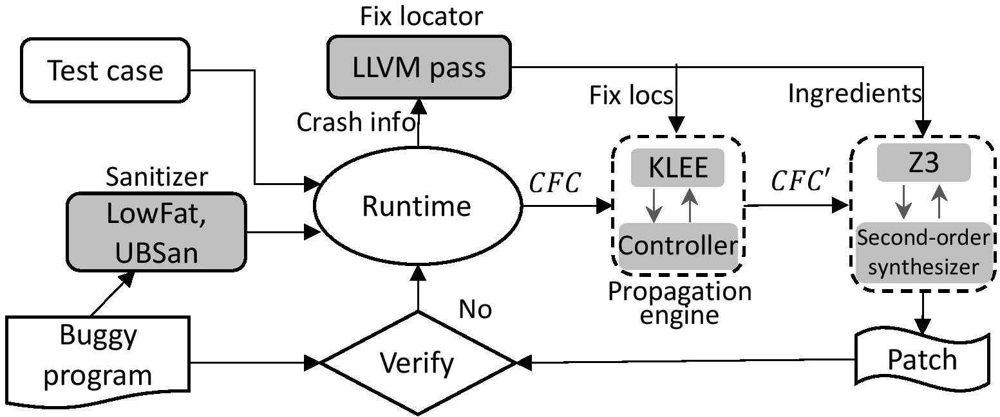

Beyond Tests: Program Vulnerability Repair via Crash Constraint Extraction
 Automated program repair can be used to prevent exploitation of known security vulnerabilities by attackers. The large potential impact of security vulnerabilities means that the need to avoid incomplete or incorrect fixes is paramount. In this paper, we present a new mechanism for automatically generating provably correct repair of security vulnerabilities. Given a program vulnerability witnessed by some crashing input or exploit, our basic approach relies on extracting a constraint representation of the underlying cause of the crash. This crash constraint can then be propagated backward to guide program repair over the space of possible fix locations. Our method synthesizes patch that is guaranteed to avoid repeating the original crash, thereby repairing the program for all program inputs not limited to a specific test suite. As such, our approach helps address the test over-fitting problem (where a suggested repair fails to generalize beyond a given test suite). An implementation of our method (ExtractFix) built on top of the KLEE symbolic execution engine shows its efficacy in fixing a wide range of vulnerabilities/bugs on subjects taken from CVEs and Google's Open-source-systems OSS Fuzz framework.
| Subject | ID | Patch | Correctness | Bug Report | Developer Fix | |
|---|---|---|---|---|---|---|
| Libtiff | CVE-2016-5321 | |
Syntactic equivalent | report | d9783e4 | |
| Libtiff | CVE-2014-8128 | |
Semantically equivalent | report | 3206e0c | |
| Libtiff | CVE-2016-3186 | |
Syntactic equivalent | report | 1144235 | |
| Libtiff | CVE-2016-5314 | |
Fail | report | 391e77f | |
| Libtiff | CVE-2016-9273 | |
Fail | report | d651abc | |
| Libtiff | bugzilla 2633 | |
Plausible | report | 5ed9fea | |
| Libtiff | CVE-2016-10094 | |
Plausible | report | c715336 | |
| Libtiff | CVE-2017-7601 | |
Plausible | report | 0a76a8 | |
| Libtiff | CVE-2016-3623 | |
Semantically equivalent | report | bd024f0 | |
| Libtiff | CVE-2017-7595 | |
Semantically equivalent | report | 47f2fb6 | |
| Libtiff | bugzilla 2611 | |
Semantically equivalent | report | 43bc25 | |
| Binutils | CVE-2018-10372 | |
Plausible | report | 6aea08 | |
| Binutils | CVE-2017-15025 | |
Semantically equivalent | report | d8010d3 | |
| Libxml2 | CVE-2016-1834 | |
Plausible | report | 8fbbf551 | |
| Libxml2 | CVE-2016-1838 | |
Plausible | report | db07dd6 | |
| Libxml2 | CVE-2016-1839 | |
Fail | report | a820dbe | |
| Libxml2 | CVE-2012-5134 | |
Syntactic equivalent | report | 6a36fbe | |
| Libxml2 | CVE-2017-5969 | |
Syntactic equivalent | report | 94691dc8 | |
| Libjpeg | CVE-2018-14498 | |
Plausible | report | cbe01e | |
| Libjpeg | CVE-2018-19664 | |
Fail | report | 1ecd9a | |
| Libjpeg | CVE-2017-15232 | |
Semantically equivalent | report | 1ecd9a5 | |
| Libjpeg | CVE-2012-2806 | |
Semantically equivalent | report | dd2b651 | |
| Coreutils | Bugzilla 26545 | |
Syntactic equivalent | report | f4570a | |
| Coreutils | GNUBug 25003 | |
Syntactic equivalent | report | 4954f79 | |
| Coreutils | GNUBug 25023 | |
Fail | report | d91aee | |
| Coreutils | Bugzilla 19784 | |
Fail | report | 1d0f1b7 | |
| Jasper | CVE-2016-8691 | |
Semantically equivalent | report | d8c2604 | |
| Jasper | CVE-2016-9387 | |
Plausible | report | d91198a | |
| FFmpeg | CVE-2017-9992 | |
Semantic equivalent | report | f52fbf4 | |
| FFmpeg | Bugzilla-1404 | |
Semantic equivalent | report | 279420b | |
|